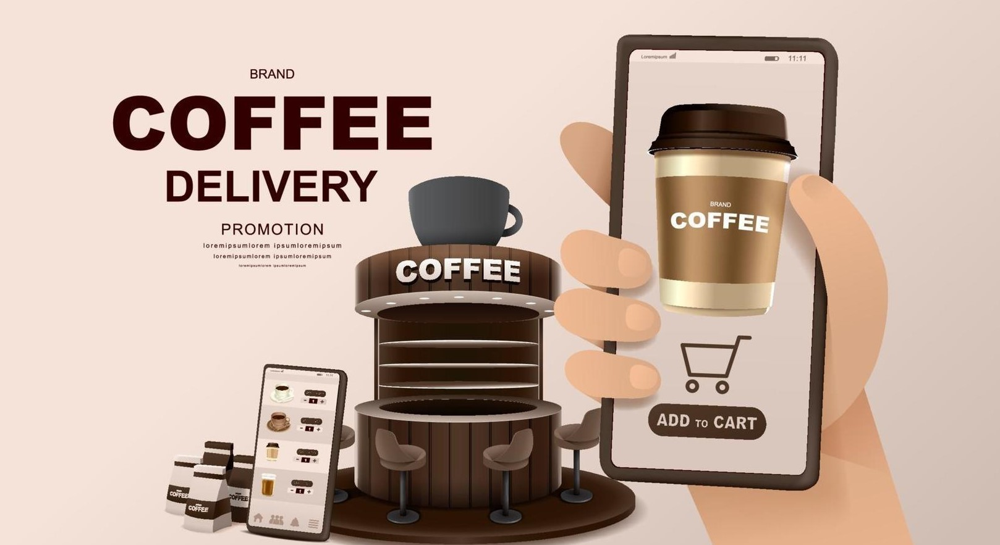

In this lab assignment, the task was to create a CoffeeKiosk application by creating and implementing classes that represented
coffee drinks, drink customizations, and a shopping cart. The driver class used the other object classes to simulate an online ordering system. I successfully created
and implemented the object classes to create a functioning CoffeeKisok application. I enjoyed this
project because of its clear real-world application, and I learned about one way a program for an online shopping experience might function.